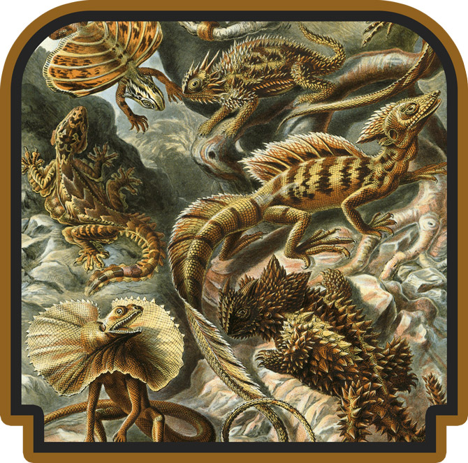
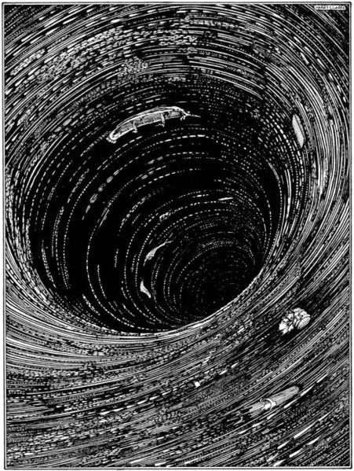
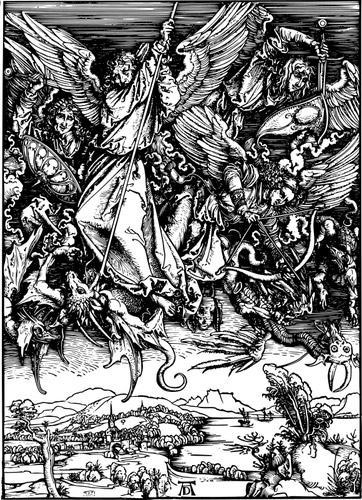
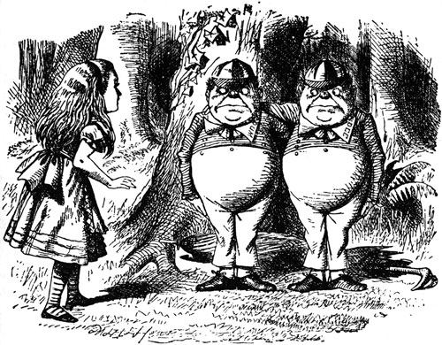
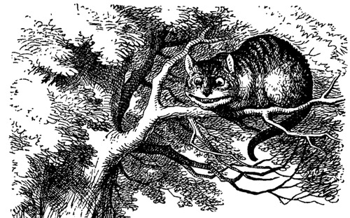
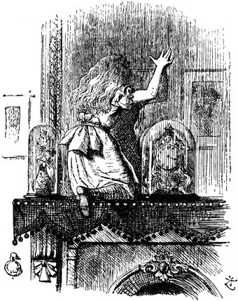
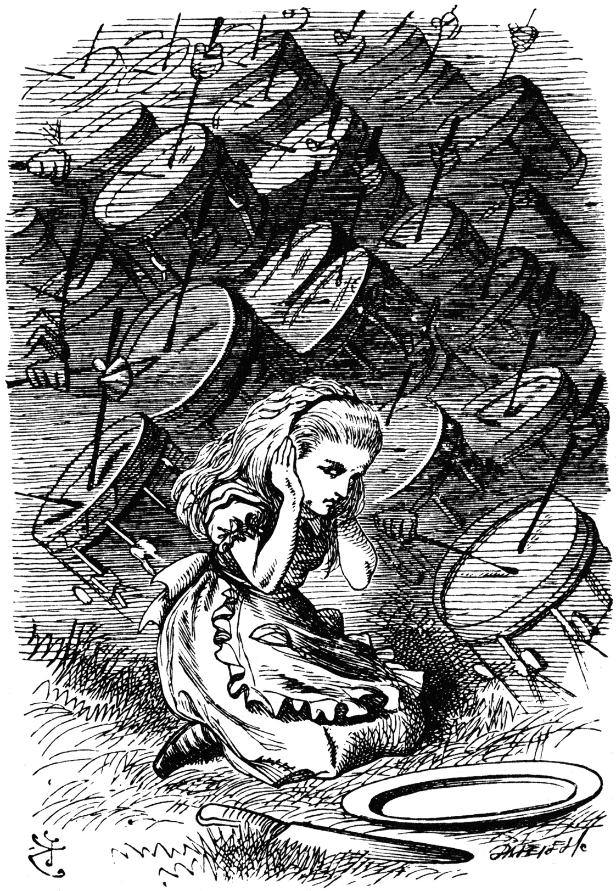

Open Source Templates
The Curious Case of the Issue and Pull Request Template
by Tal Ater

Chapter 1
The Overflowing Mailboxes

You are standing in an open field west of a white house. The house is a carefully constructed masterpiece, with solid foundations and a beautiful facade matched by an elegant interior.
Around the back of the house you see a long line of people, all of them holding little white envelopes. They seem very eager to help with the house.
There are two mailboxes here.
The first mailbox is simply labeled issues ("as if I don't have enough of my own to deal with", you think to yourself).
The second is mysteriously labeled - Pull Requests.
Both are overflowing.
Page 37
A Bottomless Pit

You take a deep breath and open the box labeled issues.
The size of the box's interior surprises you. As you look into it, you are suddenly gripped by a feeling that the box has no bottom.
As you stare down into the seemingly bottomless pit of the box, you begin to feel a chill running down your spine. It is as if… as if the endless box of issues is staring right back into your soul.
It feels… judgy.
- Rolling up your sleeves, you decide to take charge of the issues box and turn to page 38.
- Fear overtakes you. You close the box with a high pitched yelp and turn back to page 1.
Page 38
Angels and Demons

As you reach down into the box, you begin to realize there is a strange order to the madness. You start to notice a pattern in the issues.
Some take the form of bug reports, grey festering blobs of infinite malevolence.
Others manifest themselves as great ethereal balls of living energy in the form of ideas. Whispering half truths of promised features, improvements, and changes.
You furrow your brow as you consider whether you should concentrate on one type of issue, or both.
Page 39
Two Sides to Every Schwartz

As you pull your head out of the issues mailbox, you are startled by a voice coming from behind you.
"So… what are you?"
They are standing under a tree, each with an arm round the other’s neck, and you know which is which in a moment, because one of them has `front’ embroidered on his collar, and the other `back’.
"I'm sure I'm very sorry, but whatever do you mean?"
"There are two sides to every Schwartz," says the first. "Front end…"
"…and back end," adds his brother.
Page 42
An Unexpected Guest

The brothers nod with understanding, give each other a knowing look and disappear into thin air.
"And that's that," says a voice from the tree above, startling you.
You look up and see a Cat grinning from ear to ear. Sensing your alarm, the Cat's grin somehow widens even more. You notice that it has very long claws and a great many teeth.
"Would you tell me, please, which way I ought to go from here?" you ask.
"That depends a good deal on where you want to get to," says the Cat. "You are either at the end of your road, or its beginning."
- Your journey feels complete, you feel ready to download your ISSUE_TEMPLATE.md
- Something feels wrong, you turn around and face the mailboxes again.
Page 98
Epilogue
Your journey is complete. Your prize awaits. You are ready to return to The Hub.
ISSUE_TEMPLATE.md
Place this file in your repository's root directory or a .github directory
You copy the contents of the ISSUE_TEMPLATE.md file, and place it in your repository.
- You decide to Star this on GitHub.
- "Maybe I should this," you say to no one in particular.
- You do not feel ready, you turn around and start again.
Page 75
Looking-glass House

You peer into the mailbox. Through it you see a confused looking person standing in an open field east of a white house.
Startled, you raise your right hand to your mouth, stifling a scream. You stumble back just in time to see the person through the mailbox stumble back and raise their left hand.
You regain your composure (feeling a bit silly, having just been startled by a looking glass), and approach the mailbox again.
"Now, if you'll only attend," says the person visible through the mailbox, "I'll tell you all about Looking-glass House. First, there's the house you can see through the glass—that's just the same as your house, only the things go the other way."
- The bizarre person in the looking glass intrigues you, and you decide to continue the conversation. You turn to page 77.
- The world spins around you, this is too much for you to deal with. You shut the mailbox and turn back to page 1.
Page 77
People With Issues

Looking through the mailbox, you notice that the line of people coming around the house are all carrying two envelopes. You watch as they pass by the issues mailbox, place one envelope there and proceed to the pull requests mailbox with the second.
"We only accept pull requests after the matter has been discussed thoroughly in an issue" explains the person through the mailbox.
Page 26
Driven to Perfection

The two of you stare at each other through the looking glass. Looking closer at your mirrored companion, you begin to notice the exhaustion on their face. It is the face of a person testing every single pull request manually.
"Are you OK?" you ask.
Your looking glass friend sighs and lowers their gaze.
"How do you test changes to your code?" they ask.
Page 29
CONTRIBUTING file

As you look more closely at the looking glass house, you begin to wonder 'how do they keep this house so tidy?'
On the tree next to the looking glass house you see a notice posted. It is hard to make out the words from this distance, but you manage to make out the big red headline saying GИITUBIЯTИOƆ.
Page 56
An Old Friend
As you gaze at the notice on the tree, you suddenly notice a huge grin hovering among the branches of the tree.
You watch as the grin widens, exposing a mouthful of sharp teeth, startling you beyond words. You squeal in terror, and slam the mailbox shut.
Feeling cold sweat running down your neck, you slowly turn around. You look up to lowest branches of the tree on your side of the looking glass where a Cat slowly fades into view, beginning with the grin, and ending with the tail.
"How are you getting on?" says the Cat, as soon as there is mouth enough for it to speak with.
- "I feel ready to download the PULL_REQUEST_TEMPLATE.md file", you say. You expect the cat to be confused by your words, but his grin somehow widens even more.
- The cat couldn't have just talked, could it? You feel faint. Your eyes close and you find yourself slipping away. You wake up hours later, back where you started.
Page 99
Epilogue
Your journey is complete. Your prize awaits. You are ready to return to The Hub.
You copy the contents of the PULL_REQUEST_TEMPLATE.md file, placing it in your repository.
- You decide to Star this on GitHub.
- "Maybe I should this," you say to no one in particular.
- You decide to start over and turn back to page 1.